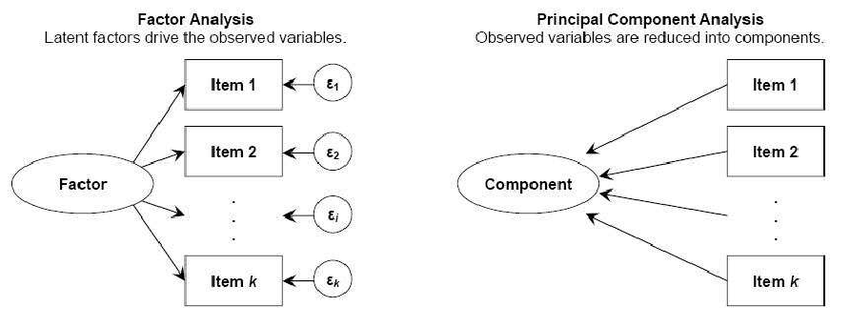
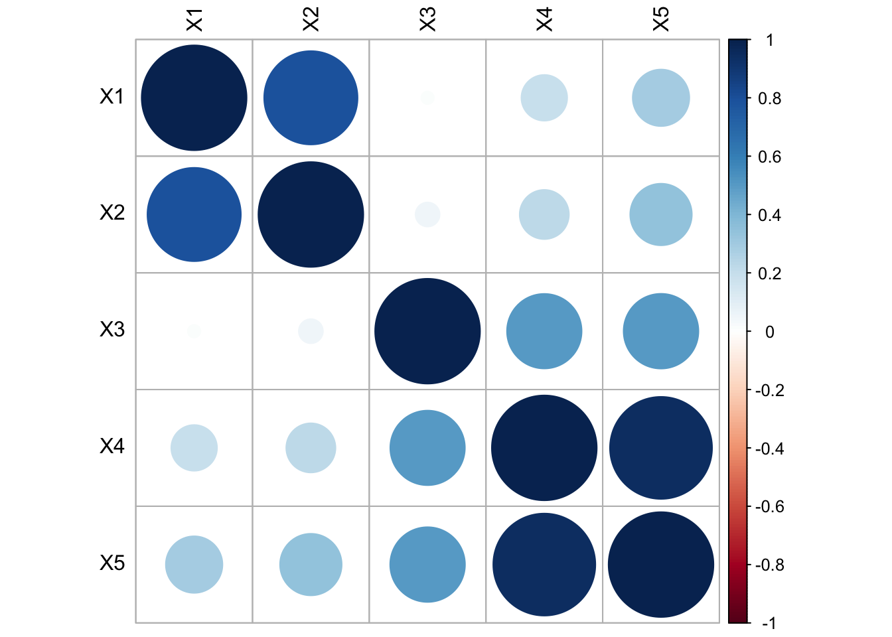
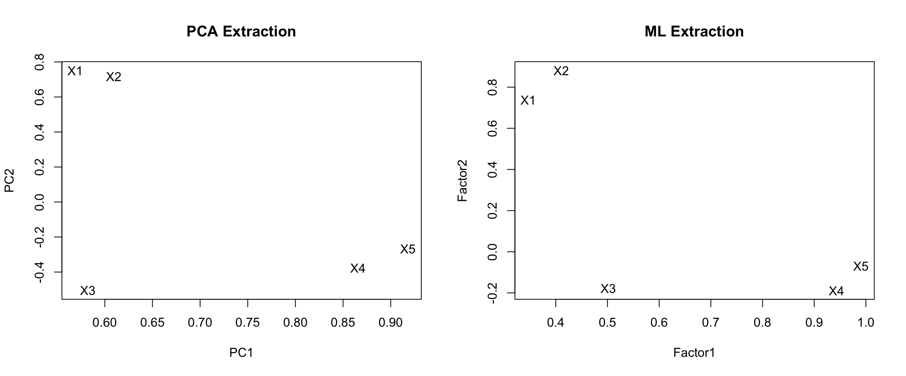
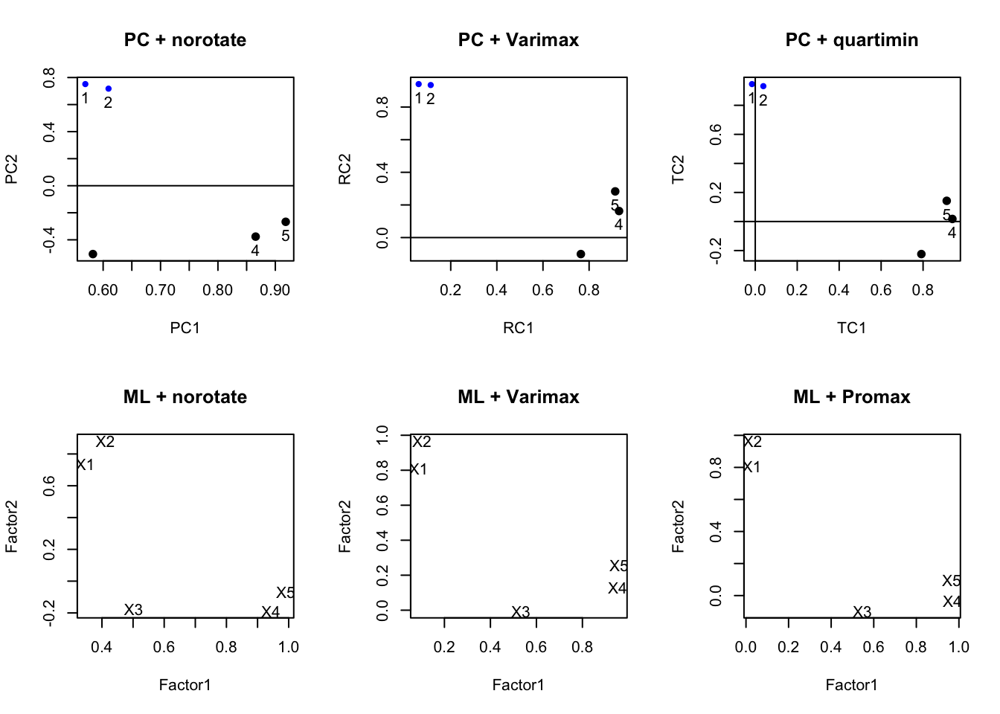
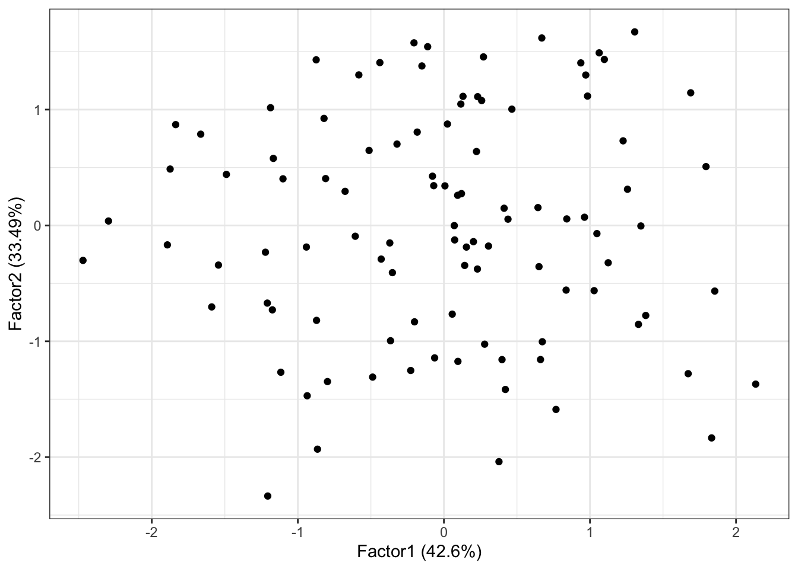

set.seed(456)
m <- c(0.163, 0.142, 0.098, -0.039, -0.013)
s <- matrix(c(1.000, 0.757, 0.047, 0.155, 0.279,
0.757, 1.000, 0.054, 0.176, 0.322,
0.047, 0.054, 1.000, 0.531, 0.521,
0.155, 0.176, 0.531, 1.000, 0.942,
0.279, 0.322, 0.521, 0.942, 1.000),
nrow=5)
data <- data.frame(MASS::mvrnorm(n=100, mu=m, Sigma=s))
colnames(data) <- paste0("X", 1:5)15 Factor Analysis
Observed events tend to co-occur for a reason. Consider physical symptoms such as a fever, cough, sore through etc. These are often observed characteristics of an underlying event such as a viral infection. Now, not all individuals express the same symptoms, or event the same severity of symptoms, but we would say that there is a strong correlation between symptoms and underlying disease.
Factor analysis aims to understand the patterns of correlations between the underlying disease, and observed symptoms.
15.1 Introduction
This intro comes from A gentle non-technical introduction to factor analysis
No attempt will be made to present a comprehensive treatment of this subject. For more detail see the references mentioned in PMA6 Chapter 15.2 and the links in the Additional Resources section for more information.
15.1.1 Latent Constructs
Latent variables are ones that cannot be measured directly; e.g. Depression, Anxiety, Mathematical ability. They drive how we would respond to various tasks and questions that can be measured; vocabulary, arithmetic, statistical reasoning.
Factor Analysis aims to
- Generalize of principal components analysis
- Explain interrelationships among a set of variables
- Where we select a small number of factors to convey essential information
- Can perform additional analyses to improve interpretation
15.1.2 Comparison with PCA
- Similar in that no dependent variable
- PCA:
- Select a number of components that explain as much of the total variance as possible.
- FA: Factors selected mainly to explain the interrelationships among the original variables.
- Ideally, the number of factors expected is known in advance.
- Major emphasis is placed on obtaining easily understandable factors that convey the essential information contained in the original set of variables.

- Mirror image of PCA
- Each PC is expressed as a linear combination of X’s
- Each \(X\) is expressed as a linear combination of Factors
15.1.3 EFA vs CFA
Exploratory Factor Analysis
- Explore the possible underlying factor structure of a set of observed variables
- Does not impose a preconceived structure on the outcome.
Confirmatory Factor Analysis
- Verifies the theoretical factor structure of a set of observed variables
- Test the relationship between observed variables and theoretical underlying latent constructs
- Variable groupings are determined ahead of time.
15.2 Factor Model
- Start with P standardized variables. That is \(\frac{(x_{i}-\bar{x})}{s_{i}}\).
- So for the rest of these FA notes, understand that each \(X\) written has already been standardized.
- Express each variable as (its own) linear combination of \(m\) common factors plus a unique factor \(e\).
\[ \begin{equation} \begin{aligned} X_{1} = l_{11}F_{1} + l_{12}F_{2} + \ldots + l_{1m}F_{m} + e_{1} \\ X_{2} = l_{21}F_{1} + l_{22}F_{2} + \ldots + l_{2m}F_{m} + e_{1} \\ \vdots \\ X_{P} = l_{P1}F_{1} + l_{P2}F_{2} + \ldots + l_{Pm}F_{m} + e_{P} \\ \end{aligned} \end{equation} \]
- \(m\) is the number of common factors, typicall \(m << P\). Somemtimes, \(m\) is known in advance.
- \(X_{i} = \sum l_{ij} F_{j}+ \epsilon_{i}\)
- \(F_{j}\) = common or latent factors.
- They are uncorrelated and each having mean 0 and variance 1
- \(l_{ij}\) = coefficients of common factors = factor loadings
- \(e_{i}\) = unique factors relating to one of the original variables.
- \(e_{i}\)’s and \(F_{j}\)’s are uncorrelated
15.2.1 Components of Variance
Recall that \(x_{i}\) is standardized, so \(Var(X)=1\).
Since each response variable \(x_{i}\) is broken into two parts, so is the variance.
- communality: part due to common factors. Denoted as \(h^{2}_{i}\).
- specificity: part due to a unique factor. Denoted as \(u^{2}_{i}\).
\(V(X_{i}) = h^{2}_{i} + u^{2}_{i}\)
Caution
If the number \(m\) of common factors is not known (EFA), it is recommended that you start with the default option available in the softare program. Often this is the number of factors with eigenvalues greater than 1.
Since the results are highly dependent on \(m\), you should always try several factors to gain further insight into the data.
15.2.2 Two big steps
The first step is to numerical find estimates of the loadings \(l_{ij}\), and the communalities \(h^{2}_{i}\). This process is called initial factor extraction. There are a number of methods to solve, we will explore three: principal components, iterated components, and maximum likelihood. The mathematical details of each are left in the textbook for interested readers.
The second step is to obtain a new set of factors, called rotated factors which is done to improve interpretation.
We will first explore these steps using simulated data.
15.3 Example data setup
Generate 100 data points from the following multivariate normal distribution:
\[\mathbf{\mu} = \left(\begin{array} {r} 0.163 \\ 0.142 \\ 0.098 \\ -0.039 \\ -0.013 \end{array}\right), \mathbf{\Sigma} = \left(\begin{array} {cc} 1 & & & & & \\ 0.757 & 1 & & & & \\ 0.047 & 0.054 & 1 & & & \\ 0.155 & 0.176 & 0.531 & 1 & \\ 0.279 & 0.322 & 0.521 & 0.942 & 1 \end{array}\right) \].
Standardize the \(X\)’s.
stan.dta <- as.data.frame(scale(data))The hypothetical data model is that these 5 variables are generated from 2 underlying factors.
\[ \begin{equation} \begin{aligned} X_{1} &= (1)*F_{1} + (0)*F_{2} + e_{1} \\ X_{2} &= (1)*F_{1} + (0)*F_{2} + e_{2} \\ X_{3} &= (0)*F_{1} + (.5)*F_{2} + e_{3} \\ X_{4} &= (0)*F_{1} + (1.5)*F_{2} + e_{4} \\ X_{5} &= (0)*F_{1} + (2)*F_{2} + e_{5} \\ \end{aligned} \end{equation} \]
Implications
- \(F_{1}, F_{2}\) and all \(e_{i}\)’s are independent normal variables
- The first two \(X\)’s are inter-correlated, and the last 3 \(X\)’s are inter-correlated
- The first 2 \(X\)’s are NOT correlated with the last 3 \(X\)’s
#library(corrplot)
corrplot(cor(stan.dta), tl.col="black")
15.4 Factor Extraction Methods
Methods
- Principal Components
- Iterated Components
- Maximum Likelihood
15.4.1 Principal components (PC Factor model)
Recall that \(\mathbf{C} = \mathbf{A}\mathbf{X}\), C’s are a function of X
\[ C_{1} = a_{11}X_{1} + a_{12}X_{2} + \ldots + a_{1P}X_{p} \]
We want the reverse: X’s are a function of F’s.
- Use the inverse! –> If \(c = 5x\) then \(x = 5^{-1}C\)
The inverse PC model is \(\mathbf{X} = \mathbf{A}^{-1}\mathbf{C}\).
Since \(\mathbf{A}\) is orthogonal, \(\mathbf{A}^{-1} = \mathbf{A}^{T} = \mathbf{A}^{'}\), so
\[ X_{1} = a_{11}C_{1} + a_{21}C_{2} + \ldots + a_{P1}C_{p} \]
But there are more PC’s than Factors…
\[ \begin{equation} \begin{aligned} X_{i} &= \sum_{j=1}^{P}a_{ji}C_{j} \\ &= \sum_{j=1}^{m}a_{ji}C_{j} + \sum_{j=m+1}^{m}a_{ji}C_{j} \\ &= \sum_{j=1}^{m}l_{ji}F_{j} + e_{i} \\ \end{aligned} \end{equation} \]
Adjustment
- \(V(C_{j}) = \lambda_{j}\) not 1
- We transform: \(F_{j} = C_{j}\lambda_{j}^{-1/2}\)
- Now \(V(F_{j}) = 1\)
- Loadings: \(l_{ij} = \lambda_{j}^{1/2}a_{ji}\)
\(l_{ij}\) is the correlation coefficient between variable \(i\) and factor \(j\)
This is similar to \(a_{ij}\) in PCA.
R code
Factor extraction via principal components can be done using the principal function in the psych package. We choose nfactors=2 here because we know there are 2 underlying factors in the data generation model.
#library(psych)
pc.extract.norotate <- principal(stan.dta, nfactors=2, rotate="none")
print(pc.extract.norotate)Principal Components Analysis
Call: principal(r = stan.dta, nfactors = 2, rotate = "none")
Standardized loadings (pattern matrix) based upon correlation matrix
PC1 PC2 h2 u2 com
X1 0.57 0.75 0.89 0.112 1.9
X2 0.61 0.72 0.89 0.113 1.9
X3 0.58 -0.51 0.59 0.406 2.0
X4 0.87 -0.38 0.89 0.109 1.4
X5 0.92 -0.27 0.91 0.086 1.2
PC1 PC2
SS loadings 2.63 1.55
Proportion Var 0.53 0.31
Cumulative Var 0.53 0.83
Proportion Explained 0.63 0.37
Cumulative Proportion 0.63 1.00
Mean item complexity = 1.7
Test of the hypothesis that 2 components are sufficient.
The root mean square of the residuals (RMSR) is 0.09
with the empirical chi square 16.62 with prob < 4.6e-05
Fit based upon off diagonal values = 0.96\[ \begin{equation} \begin{aligned} X_{1} &= 0.53F_{1} + 0.78F_{2} + e_{1} \\ X_{2} &= 0.59F_{1} + 0.74F_{2} + e_{2} \\ X_{3} &= 0.70F_{1} - 0.39F_{2} + e_{3} \\ X_{4} &= 0.87F_{1} - 0.38F_{2} + e_{4} \\ X_{5} &= 0.92F_{1} - 0.27F_{2} + e_{5} \\ \end{aligned} \end{equation} \]
These equations come from the top of the output, under Standardized loadings.
15.4.2 Iterated components
Select common factors to maximize the total communality
- Get initial communality estimates
- Use these (instead of original variances) to get the PC’s and factor loadings
- Get new communality estimates
- Rinse and repeat
- Stop when no appreciable changes occur.
R code not shown, but can be obtained using the factanal package in R.
15.4.3 Maximum Likelihood
- Assume that all the variables are normally distributed
- Use Maximum Likelihood to estimate the parameters
R code
The cutoff argument hides loadings under that value for ease of interpretation. Here I am setting that cutoff at 0 so that all loadings are being displayed. I encourage you to adjust this cutoff value in practice to see how it can be useful in reducing cognitave load of looking through a grid of numbers.
ml.extract.norotate <- factanal(stan.dta, factors=2, rotation="none")
print(ml.extract.norotate, digits=2, cutoff=0)
Call:
factanal(x = stan.dta, factors = 2, rotation = "none")
Uniquenesses:
X1 X2 X3 X4 X5
0.33 0.06 0.72 0.08 0.01
Loadings:
Factor1 Factor2
X1 0.35 0.74
X2 0.41 0.88
X3 0.50 -0.18
X4 0.94 -0.19
X5 0.99 -0.07
Factor1 Factor2
SS loadings 2.41 1.39
Proportion Var 0.48 0.28
Cumulative Var 0.48 0.76
Test of the hypothesis that 2 factors are sufficient.
The chi square statistic is 0.4 on 1 degree of freedom.
The p-value is 0.526 The factor equations now are:
\[ \begin{equation} \begin{aligned} X_{1} &= -0.06F_{1} + 0.79F_{2} + e_{1} \\ X_{2} &= -0.07F_{1} + 1F_{2} + e_{2} \\ X_{3} &= 0.58F_{1} + 0.19F_{2} + e_{3} \\ \vdots \end{aligned} \end{equation} \]
15.4.4 Uniqueness
Recall Factor analysis splits the variance of the observed X’s into a part due to the communality \(h_{i}^{2}\) and specificity \(u_{i}^{2}\). This last term is the portion of the variance that is due to the unique factor. Let’s look at how those differ depending on the extraction method:
pc.extract.norotate$uniquenesses X1 X2 X3 X4 X5
0.11151283 0.11336123 0.40564130 0.10890203 0.08591098 ml.extract.norotate$uniquenesses X1 X2 X3 X4 X5
0.33432315 0.05506386 0.71685548 0.07508356 0.01414656 Here we see that the uniqueness for X2, X4 and X5 under ML is pretty low compared to the PC extraction method, but that’s almost offset by a much higher uniqueness for x1 and X3.
Ideally we want the variance in the X’s to be captured by the factors. So we want to see a low unique variance.
15.4.5 Resulting factors
par(mfrow=c(1,2)) # grid of 2 columns and 1 row
pc.load <- pc.extract.norotate$loadings[,1:2]
plot(pc.load, type="n", main="PCA Extraction") # set up the plot but don't put points down
text(pc.load, labels=rownames(pc.load)) # put names instead of points
ml.load <- ml.extract.norotate$loadings[,1:2]
plot(ml.load, type="n", main="ML Extraction")
text(ml.load, labels=rownames(ml.load))
PCA Extraction
- X1 and X2 load high on PC1, and low on PC1.
- X3, 4 and 5 are negative on PC2, and moderate to high on PC1.
- PC1 is not highly correlated with X3
ML Extraction
- Same overall split, X3 still not loading high on Factor 1.
- X1 loading lower on Factor 2 compared to PCA extraction method.
Neither extraction method reproduced our true hypothetical factor model. Rotating the factors will achieve our desired results.
15.5 Rotating Factors
- Find new factors that are easier to interpret
- For each \(X\), we want some high/large (near 1) loadings and some low/small (near zero)
- Two common rotation methods: Varimax rotation, and oblique rotation.
Same(ish) goal as PCA, find a new set of axes to represent the factors.
15.5.1 Varimax Rotation
- Restricts the new axes to be orthogonal to each other. (Factors are independent)
- Maximizes the sum of the variances of the squared factor loadings within each factor \(\sum Var(l_{ij}^{2}|F_{j})\)
- Interpretations slightly less clear
Varimax rotation with principal components extraction.
pc.extract.varimax <- principal(stan.dta, nfactors=2, rotate="varimax")
print(pc.extract.varimax)Principal Components Analysis
Call: principal(r = stan.dta, nfactors = 2, rotate = "varimax")
Standardized loadings (pattern matrix) based upon correlation matrix
RC1 RC2 h2 u2 com
X1 0.06 0.94 0.89 0.112 1.0
X2 0.11 0.93 0.89 0.113 1.0
X3 0.76 -0.10 0.59 0.406 1.0
X4 0.93 0.16 0.89 0.109 1.1
X5 0.91 0.28 0.91 0.086 1.2
RC1 RC2
SS loadings 2.30 1.88
Proportion Var 0.46 0.38
Cumulative Var 0.46 0.83
Proportion Explained 0.55 0.45
Cumulative Proportion 0.55 1.00
Mean item complexity = 1.1
Test of the hypothesis that 2 components are sufficient.
The root mean square of the residuals (RMSR) is 0.09
with the empirical chi square 16.62 with prob < 4.6e-05
Fit based upon off diagonal values = 0.96Varimax rotation with maximum likelihood extraction. Here I’m using the cutoff argument to only show the values of loadings over 0.3.
ml.extract.varimax <- factanal(stan.dta, factors=2, rotation="varimax")
print(ml.extract.varimax, digits=2, cutoff=.3)
Call:
factanal(x = stan.dta, factors = 2, rotation = "varimax")
Uniquenesses:
X1 X2 X3 X4 X5
0.33 0.06 0.72 0.08 0.01
Loadings:
Factor1 Factor2
X1 0.81
X2 0.97
X3 0.53
X4 0.95
X5 0.96
Factor1 Factor2
SS loadings 2.13 1.67
Proportion Var 0.43 0.33
Cumulative Var 0.43 0.76
Test of the hypothesis that 2 factors are sufficient.
The chi square statistic is 0.4 on 1 degree of freedom.
The p-value is 0.526 Communalities are unchanged after varimax (part of variance due to common factors). This will always be the case for orthogonal (perpendicular) rotations.
15.5.2 Oblique rotation
- Same idea as varimax, but drop the orthogonality requirement
- Less restrictions allow for greater flexibility
- Factors are still correlated
- Better interpretation
- Methods:
- quartimax or quartimin minimizes the number of factors needed to explain each variable
- direct oblimin standard method, but results in diminished interpretability of factors
- promax is computationally faster than direct oblimin, so good for very large datasets
pc.extract.quartimin <- principal(stan.dta, nfactors=2, rotate="quartimin")
ml.extract.promax<- factanal(stan.dta, factors=2, rotation="promax")par(mfrow=c(2,3))
plot(pc.extract.norotate, title="PC + norotate")
plot(pc.extract.varimax, title="PC + Varimax")
plot(pc.extract.quartimin, title="PC + quartimin")
load <- ml.extract.norotate$loadings[,1:2]
plot(load, type="n", main="ML + norotate")
text(load, labels=rownames(load))
load <- ml.extract.varimax$loadings[,1:2]
plot(load, type="n", main="ML + Varimax")
text(load, labels=rownames(load))
load <- ml.extract.promax$loadings[,1:2]
plot(load, type="n", main= "ML + Promax")
text(load, labels=rownames(load)) 
Varimax vs oblique here doesn’t make much of a difference, and typically this is the case. You almost always use some sort of rotation. Recall, this is a hypothetical example and we set up the variables in a distinct two-factor model. So this example will look nice.
15.6 Factor Scores
We could obtain Factor scores for an individual based on only the X’s that highly load on that factor. Essentially here, FA would identify subgroups of correlated variables.
In our hypothetical example where after rotation x1 and x2 loaded highly on factor 2, and x3-5 loaded highly on factor 1, we could calculate factor scores as
- factor score 2 for person \(i\) = \(x_{i1} + x_{i2}\)
- factor score 3 for person \(i\) = \(x_{i3} + x_{i4} + x_{i5}\)
In some simple applications, this approach may be sufficient.
More commonly, we will use a regression procedure to compute factor scores. This method accounts for the correlation between the \(x_{i}\)’s and uses the factor loadings \(l_{ij}\) to calculate the factor scores.
- Can be used as dependent or independent variables in other analyses
- Can be generated by adding the
scores="regression"option tofactanal(), orscores=TRUEinprincipal() - Each record in the data set with no missing data will have a corresponding factor score.
principal()also has amissingargument that if set toTRUEit will impute missing values.
fa.ml.varimax <- factanal(stan.dta, factors=2, rotation="varimax", scores="regression")
summary(fa.ml.varimax$scores) Factor1 Factor2
Min. :-2.47094 Min. :-2.335593
1st Qu.:-0.70659 1st Qu.:-0.737829
Median : 0.08397 Median :-0.002978
Mean : 0.00000 Mean : 0.000000
3rd Qu.: 0.67114 3rd Qu.: 0.792273
Max. : 2.13449 Max. : 1.670956 head(fa.ml.varimax$scores) Factor1 Factor2
[1,] 0.9713019 1.29838695
[2,] -1.1676730 0.57888326
[3,] -0.6068270 -0.09329792
[4,] 1.2569753 0.31231783
[5,] 1.3817494 -0.77707241
[6,] 0.2311359 1.11142513#library(ggforitfy)
autoplot(fa.ml.varimax) # see vignette for more info. Link at bottom
To merge these scores back onto the original data set providing there is no missing data you can use the bind_cols() function in dplyr.
data.withscores <- bind_cols(data, data.frame(fa.ml.varimax$scores))
kable(head(data.withscores))| X1 | X2 | X3 | X4 | X5 | Factor1 | Factor2 |
|---|---|---|---|---|---|---|
| 0.5989843 | 1.3729499 | 1.0871992 | 0.8597854 | 1.2485892 | 0.9713019 | 1.2983869 |
| 0.7429206 | 0.3819301 | -0.0113714 | -1.1316383 | -1.1316216 | -1.1676730 | 0.5788833 |
| -0.5699028 | -0.1331253 | -0.3594030 | -0.7153705 | -0.7274903 | -0.6068270 | -0.0932979 |
| 1.6526585 | 0.2216533 | 0.6564431 | 1.4564378 | 1.1959989 | 1.2569753 | 0.3123178 |
| -0.8582815 | -0.6310620 | 1.2474978 | 1.2291103 | 1.0684566 | 1.3817494 | -0.7770724 |
| 1.1682966 | 0.9849325 | -0.8860830 | -0.0713417 | 0.5105760 | 0.2311359 | 1.1114251 |
15.7 What to watch out for
- Number of factors should be chosen with care. Check default options.
- There should be at least two variables with non-zero weights per factor
- If the factors are to be correlated, try oblique factor analysis
- Results usually are evaluated by reasonableness to investigator rather than by formal tests
- Motivate theory, not replace it.
- Missing data - factors will only be created using available data.
15.8 Additional Resources
- A gentle non-technical introduction to factor analysis
- Tutorial by a Psych 253 student at Stanford
ggfortifyvignette for theautoplot()function
The FactomineR package looks promising, it has some helpful graphics for determining/confirming variable groupings and aiding interpretations.
- STHDA tutorial using FactomineR